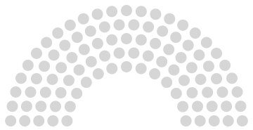

This is a tool to view current and historical seat distributions of various parliaments, senates, congresses, and other political bodies from around the world.
Choose a parliament in the top left menu to get started.
View this project on GitHub
Licensed under GPL-3.0